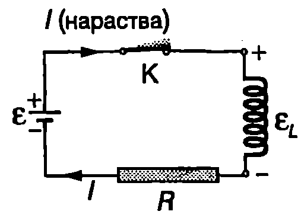
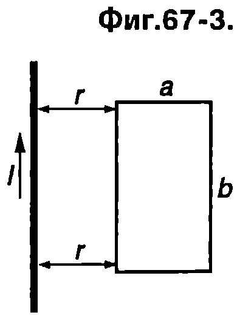

Самоиндукция
На Фиг. \ref{fig:67.1} е показана намотка с навивки, по която тече ток. Той създава магнитно поле и магнитен поток през напречното сечение на намотката. Ако токът се изменя с течение на времето, магнитният поток също се изменя и в намотката се индуцира ЕДН. Явлението, при което промяната на тока в един проводник индуцира ЕДН в същия проводник, се нарича самоиндукция.
Самоиндукцията също се описва от закона на Фарадей. Магнитният поток през намотката е правопропорционален на индукцията В на магнитното поле, а индукцията В от своя страна е правопропорционална на тока , който създава магнитното поле. Следователно, съгласно със закона на Фарадей, самоиндуцираното ЕДН , е пропорционално на скоростта , с която се изменя токът:
Коефициентът на пропорционалност се нарича индуктивност на проводника. Индуктивността зависи от размерите и формата на проводника, както и от магнитните свойства на средата, в която той се намира. (Трябва да се подчертае, че индуктивността не зависи от тока.) От уравнение \eqref{eq:67.1} индуктивността на намотката може да се изрази чрез магнитния поток през напречното и сечение, броя на навивките и тока :

`Фиг. 67.1`
От уравнение \eqref{eq:67.1} индуктивността на намотката се изразява също така чрез индуцираното ЕДН и скоростта на изменение на тока:
Единицата за индуктивност се нарича хенри (H) в чест на американския физик Джоузеф Хенри (1797-1878), който независимо от Фарадей открива закона за индуцираното ЕДН.
Съгласно с уравнение \eqref{eq:67.3} 1H = 1Vs/A
Индуктивността на даден проводник е H ако при промяна на тока със скорост A/s в него се самоиндуцира напрежение = 1V
Може да се аналогия между индуктивността на проводниците и масата на телата. Както знаем от механиката, колкото масата те по-голяма, толкова тялото е по-инертно и по-трудно може да се промени неговата скорост. По подобен начин, колкото индуктивността 1 на един проводник е по-голяма, толкова по-бавно се променя токът през него.
Ще обърнем внимание, че уравнение то за самоиндуцираното напрежение
е в сила не само за намотка, но и за всеки проводник, токът през който се изменя с течение на времето. Съединителните проводници и резисторите в една електрическа верига обаче имат много малка индуктивност, затова тяхното ЕДН на самоиндукция се пренебрегва.
Както вече отбелязахме, чрез знака минус в уравненията, изразяващи закона на Фарадей, се отчита правилото на Ленц. За да изясним този въпрос, ще разгледаме електрическата верига от Фиг. \ref{fig:67.1}. Когато плъзгачът на реостата се премества наляво, съпротивлението на реостата намалява, а токът във веригата расте. В намотката се самоиндуцира ЕДН , което съгласно с правилото на Ленц се противопоставя на нарастването на тока. Ако разглеждаме намотката като източник на ток с ЕДН , неговият положителен полюс трябва да е свързан с положителния полюс на външния източник. Такъв “насрещно” свързан източник намалява тока във веригата и има отрицателно ЕДН () Същото следва и от уравнение \eqref{eq:67.4}. Действително, когато токът нараства, първата му производна по времето в положителна. Тогава Когато токът във веригата намалява (Фиг. \ref{fig:67.1}б), съгласно с правилото на Ленц индуцираното в намотката ЕДН , се противопоставя на това намаляване, т.е. то поддържа тока във веригата. В този случай можем да разглеждаме намотката като източник с ЕДН , чийто отрицателен полюс е свързан към положителния полюс на външния източник и по този начин този допълнителен източник усилва тока във веригата (електродвижещото му напрежение е положително: ) Когато токът намалява, първата му производна е отрицателна и от уравнение \eqref{eq:67.4} също следва, че
\begin{psexample}[label=ex:67.1]{Индуктивност на соленоид}{} Определете индуктивността на соленоид с дължина cm и напречно сечение , който има навивки. \end{psexample}
Решение
Тъй като дължината на соленоида е много по-голяма от диаметъра му и плътността на навивките е голяма, магнитното поле, което се създава вътре в соленоида при протичане на ток по навивките му, е приблизително еднородно. Индукцията му е (вж. пример 65.3)
Магнитния поток през произволно напречно сечение на соленоида, т.е. през всяка негова навивка, в Индуктивността на соленоида определяме от уравнение \eqref{eq:67.2}:
Направените пресмятания са за случая, когато соленоидът се намира във вакуум (или във въздух). Индуктивността на соленоида многократно нараства, когато в него се постави желязна сърцевина.
Енергия на магнитното поле
При затваряне на ключа К токът в електрическата верига от Фиг. \ref{fig:67.2} не достига мигновено максималната си стойност. Причина за постепенното му нарастване е самоиндуцираното в намотката ЕДН , което съгласно с правилото на Ленц се противопоставя на нарастването на тока. Токовият източник с ЕДН трябва да извърши допълнителна работа за преодоляване на това противодействие и за създаване на тока. Затова само част от енергията, която се черпи от източника, се преобразува в джаулова топлина в резистора, а останалата част се натрупва в намотката. За да анализираме преобразуването на енергията количествено, ще приложим правилото на Кирхоф за токовия контур: . Заместваме и записваме това уравнение във вида Умножаваме двете страни на уравнението по и получаваме
Това уравнение изразява закона за запазване на енергията: енергията , която се се черпи за време от източника, е равна на сумата от отделеното в резистора за същото време количество топлина и енергията , натрупана в намотката при увеличаване на тока с за време . Цялата енергия, която се натрупва в намотката при нарастване на тока от нула до , е

`Фиг. 67.2`
Следователно енергията е правопропорционална на квадрата на тока , който тече по намотката, така както енергията на зареден кондензатор е правопропорционална на квадрата на заряда на кондензатора: (вж. уравнение \eqref{eq:49.8} на стр.33). В електростатиката (вж.~\ref{sec:49}) обърнахме внимание на факта, че енергията на заредения кондензатор всъщност е енергия на неговото електрично поле. Аналогично, енергията на тока през намотка (проводник) с индуктивност е енергия на магнитното поле, което този ток създава. Плътността на енергията на електричното поле и е правопропорционална на квадрата на интензитета на полето. Във вакуум вж. уравнение \eqref{eq:49.10} на стр.33. Доказва се, че плътността на енергията на магнитното поле (енергията на единица обем от пространството, в което има поле) е правопропорционална на квадрата на магнитната индукция на полето. За магнитно поле във вакуум
където е магнитната константа.
Пример 67.2
Докажете, че обемната плътност на енергията на магнитното поле на тока, течащ по дълъг соленоид, се изразява с уравнение \eqref{eq:67.8}. \end{psexample}
Решение
Индуктивността на соленоида се изразява с уравнение \eqref{eq:67.5}: . Магнитното поле в соленоида е приблизително еднородно, а индукцията му се изразява с уравнение \eqref{eq:65.12}: . Заместваме и от тези две уравнения в уравнение \eqref{eq:67.7} за енергията на магнитното поле на тока и след елементарни преобразования получаваме където е обемът на соленода, т.е. обемът от пространството, заето от еднородното магнитно поле на тока. Следователно плътността на енергията на магнитното поле на тока е
Задачи
-
Токът през намотка с индуктивност H намалява равномерно от A до A за време s. Колко е самоиндуцираното ЕДН?
-
Колко е енергията на магнитното поле на ток A течащ по намотка с индуктивност H?
-
Токът през намотка нараства два пъти. Как се изменя: а) индукцията на магнитното поле на тока; б) магнитният поток през намотката; в) индуктивността на намотката; г) енергията на магнитното поле на тока?
-
Токът в намотка нараства с постоянна скорост 50 A/s. Колко е индуктивността на намотката, ако в нея се самоиндуцира напрежение 25 V?
-
Колко метра тънък проводник е необходим за изготвяне на соленоид с дължина cm и индуктивност mH? Дължината на соленоида е много по-голяма от диаметъра на напречното му сечение.
-
Когато в дадена намотка тече ток 5 А, енергията на магнитното поле на тока в 0,5 J. Колко е индуктивността на намотката?
-
Когато в намотка тече ток 2 А, енергията на магнитното поле на тока е 1 J. При какъв ток магнитното поле има енергия 16 J?
-
По безкрайно дълъг праволинеен проводник тече ток . Определете обемната плътност на енергията на магнитното поле на тока на разстояние от проводника. Проводникът е във вакуум.
-
При какъв интензитет плътността на енергията на електрично поле във вакуум е равна на плътността на енергията на магнитно поле с индукция T също във вакуум?
-
Безкрайно дълъг праволинеен проводник и правоъгълна проводникова рамка лежат в една равнина, както е показано на Фиг. \ref{fig:67.3}. Покажете, че когато токът по проводника се изменя с течение на времето по закона (, и са константи), в рамката се индуцира електродвижещо напрежение с големина

`Фиг. 67.3`